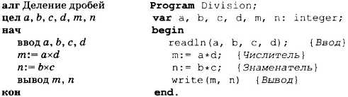
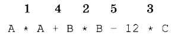
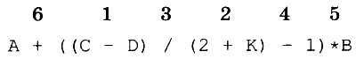
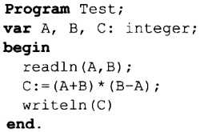

После того как построен алгоритм решения задачи, составляется программа на определенном языке программирования.
Среди современных языков программирования одним из самых популярных является язык Паскаль. Этот язык разработан в 1971 году и назван в честь Влеза Паскаля — французского ученого, изобретателя механической вычислительной машины. Автор языка Паскаль — швейцарский профессор Никлаус Вирт.
Паскаль — это универсальный язык программирования, позволяющий решать самые разнообразные задачи обработки информации.
Команду алгоритма, записанную на языке программирования, принято называть оператором.
Программа на Паскале близка по своему виду к описанию алгоритма на АЯ.
Сравните алгоритм решения уже знакомой вам задачи деления простых дробей с соответствующей программой на Паскале:

1
Структура программы на Паскале
Даже не заглядывая в учебник по Паскалю, в этой программе можно все понять (особенно помогает знание английского языка).
Заголовок программы начинается со слова Program (программа), за которым следует произвольное имя, придуманное программистом:
Program <имя программы>;
Раздел описания переменных начинается со слова Var (variables — переменные), за которым идет список имен переменных через запятую. Тип указывается после двоеточия. В стандарте языка Паскаль существуют два типа числовых величин: вещественный и целый. Слово integer обозначает целый тип (является идентификатором целого типа). Вещественный тип обозначается словом real.
Например, раздел описания переменных может быть таким:
var a, b: integer; с, d: real;
Идентификаторы переменных составляются из латинских букв и цифр; первым символом обязательно должна быть буква.
Раздел операторов — основная часть программы. Начало и конец раздела операторов программы отмечаются служебными словами begin (начало) и end (конец). В самом конце программы ставится точка:
begin
<операторы>
end.
Операторы ввода, вывода, присваивания
Ввод исходных данных с клавиатуры происходит по оператору read (read — читать) или readln (read line — читать строку):
read(<список переменных>)
или readln(<список переменных>)
При выполнении команды ввода компьютер ожидает действий пользователя. Пользователь набирает на клавиатуре значения переменных в том порядке, в каком переменные указаны в списке, отделяя их друг от друга пробелами. Одновременно с набором данных на клавиатуре они появляются на экране. В конце нажимается клавиша <ВВОД> (). Разница в выполнении операторов readln и read состоит в том, что после выполнения ввода по оператору readln экранный курсор перемещается в начало новой строки, а по оператору read этого не происходит.
Вывод результатов происходит по оператору write (write — писать) или writeln (write line — писать в строку):
write(<список вывода>)
или writeln(<список вывода>)
Результаты выводятся на экран компьютера в порядке их перечисления в списке.
Элементами списка вывода могут быть константы, переменные, выражения.
Разница в выполнении операторов writeln и write состоит в том, что после выполнения вывода по оператору writeln экранный курсор перемещается в начало новой строки, а по оператору write этого не происходит.
Арифметический оператор присваивания на Паскале имеет следующий формат:
<числовая переменная>:=<арифметическое выражение>?
Арифметическое выражение может содержать числовые константы и переменные, знаки арифметических операций, круглые скобки.
Кроме того, в арифметических выражениях могут присутствовать функции.
Знаки основных арифметических операций записываются так:
+ сложение,
- вычитание,
* умножение,
/ деление.
Правила записи арифметических выражений
Запись арифметических выражений на Паскале похожа на обычную математическую запись.
В отличие от математики, где часто пропускается знак умножения (например, пишут 2А), в Паскале этот знак пишется обязательно: 2*А.
Например, математическое выражение
А2 + В2 - 12С
на Паскале записывается так:
А*А + В*В - 12*С
Это же выражение можно записать иначе:
SQR(А) + SQR(В) - 12*C
Здесь использована функция возведения в квадрат — SQR.
Аргументы функций всегда пишутся в круглых скобках.
Последовательность выполнения операций определяется по их приоритетам (старшинству).
К старшим операциям относятся умножение (*) и деление (/). Операции сложения и вычитания — младшие.
В первую очередь выполняются старшие операции. Несколько операций одинакового старшинства, записанные подряд, выполняются в порядке их записи слева направо.
Приведенное выше арифметическое выражение будет вычисляться в следующем порядке (порядок вычислений указан цифрами сверху):?

2
Круглые скобки в арифметических выражениях влияют на порядок выполнения операций.
Как и в математике, в первую очередь выполняются операции в скобках. Если имеется несколько пар вложенных скобок, то сначала выполняются операции в самых внутренних скобках.
Например:

3
Пунктуация Паскаля
Необходимо строгое соблюдение правописания (синтаксиса) программы. В частности, в Паскале однозначно определено назначение знаков пунктуации.
Точка с запятой (;)
ставится в конце заголовка программы, в конце раздела описания переменных, является разделителем описания переменных в разделе переменных и разделителем операторов.
Перед словом end точку с запятой можно не ставить.
Запятая (,)
является разделителем элементов во всевозможных списках: списке переменных в разделе описания, списках вводимых и выводимых величин.
Текст программы заканчивается точкой.
Строгий синтаксис в языке программирования необходим потому, что компьютер является формальным исполнителем программы. Если, допустим, разделителем в списке переменных должна быть запятая, то любой другой знак будет восприниматься как ошибка.
Если точка с запятой является разделителем операторов, то в качестве оператора компьютер воспринимает всю часть текста программы от одной точки с запятой до другой.
Если программист забыл поставить «;» между какими-то двумя операторами, то компьютер будет принимать их за один с неизбежной ошибкой.
В программу на Паскале можно вставлять комментарии. Комментарий — это пояснение к программе, которое записывается в фигурных скобках. В комментариях можно использовать русские буквы.
На исполнение программы комментарий никак не влияет.
Заметим, что в Паскале нет различия между строчными и прописными буквами.
Например, для Паскаля тождественны следующие варианты записи: begin, Begin, BEGIN, BeGiN. Использование строчных или прописных букв — дело вкуса программиста.
Коротко о главном
Паскаль — универсальный язык программирования.
Программа на Паскале состоит из заголовка, описаний и операторов.
Заголовок программы:
Program <имя программы>;
Описание переменных:
var <список однотипных переменных>: <тип>; ...
Раздел операторов:
begin
end.
Операторы ввода данных с клавиатуры:
геас!(<список ввода>), readln(<список ввода>)
Операторы вывода на экран:
write(<список вывода>, writeln(<список вывода>
Арифметический оператор присваивания:
<переменная>:=<арифметическое выражение>
Арифметическое выражение может содержать любое количество арифметических операций и функций.
Последовательность выполнения операций определяется расстановкой скобок и старшинством операций (приоритетами). Старшие операции: *, /; младшие операции: +, - .
Точка с запятой ставится в конце заголовка программы, в конце раздела описания переменных, является разделителем переменных в разделе переменных и разделителем операторов. Текст программы заканчивается точкой.
Вопросы и задания
1. Когда появился язык Паскаль и кто его автор?
2. Как записывается заголовок программы на Паскале?
3. Как записывается раздел описания переменных?
4. С какими типами числовых величин работает Паскаль?
5. Как записываются операторы ввода и вывода в Паскале?
6. Что такое оператор присваивания?
7. Как записываются арифметические выражения?
8. По каким правилам определяется порядок выполнения операций в арифметическом выражении?
9. Какая задача решается по следующей программе?

1
Какой результат будет получен, если в качестве исходных значений А и В ввести, соответственно, 7 и 8?
10. Составьте программы на Паскале для решения задач № 6-9 из заданий к § 10. При этом отмените ограничения на количество операций в арифметическом выражении, сформулированные в условиях задач.